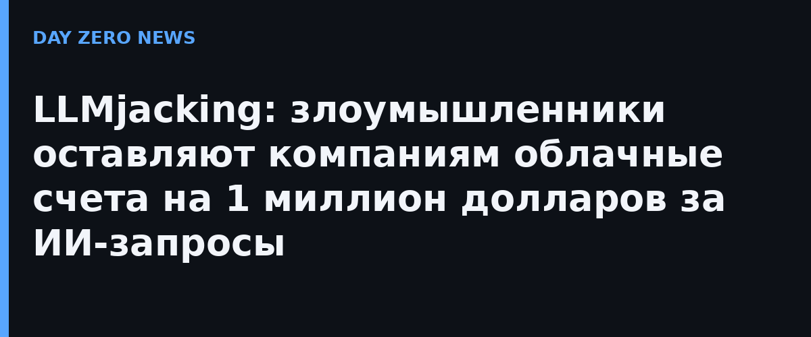

Команда Mandiant и Google Threat Intelligence Group опубликовала отчёт о новой волне атак LLMjacking — угона корпоративного доступа к языковым моделям ради бесплатной генерации. В 2026 году Mandiant разобрала несколько инцидентов в Северной и Южной Америке и Азиатско-Тихоокеанском регионе: пострадали банки и финтех, ритейл, технологические компании и транспортные операторы. В отличие от криптоджекинга, который точит ресурсы постепенно, LLMjacking разгоняется за часы: в зафиксированных случаях фродовые облачные расходы превышали 100 тысяч долларов за один день, а у отдельных организаций накопились до миллиона долларов, прежде чем доступ удалось перекрыть.
Злоумышленникам не нужен сам контент — им нужны чужие API-ключи и биллинг-аккаунты. Схема, которую описал Wiz, начинается с рекламы в поиске: покупается рекламное объявление по запросам вроде «google cloud», клик по нему ведёт на поддельную страницу входа, где жертва сама отдаёт логин и одноразовый код подтверждения. Дальше злоумышленник удаляет организационные политики ограничения IAM, заводит сервисные аккаунты с ключами Gemini и привязывает чужие проекты к биллинг-аккаунту жертвы. Запросы обрабатываются в сторонних проектах, поэтому промпты и результаты в логах компании не появляются вообще — видно только странный счёт.
GTIG наблюдает разделение труда: одни группы специализируются на взломе и первоначальном доступе, другие — на монетизации. Так появились «LLM-миксеры» — подпольные шлюзы-прокси, которые агрегируют угнанный доступ к моделям и перепродают его подписчикам на дарк-форумах. В одном расследовании две независимые группы координировали действия по захвату и продаже корпоративной ИИ-инфраструктуры. Термин LLMjacking ввели ещё в 2024 году исследователи Sysdig, но теперь, судя по цифрам, это уже не мелкое воровство токенов, а самостоятельный криминальный сегмент.
Mandiant и Wiz советуют не полагаться на бдительность сотрудников: шаблоны входа следует проверять по домену, а рекламу в поиске считать потенциальной приманкой. Практическая часть проще, чем кажется: запретить доступ к LLM-API из публичного интернета без аутентификации, регулярно ротировать ключи, включить алерты на аномальные всплески расходов облака (рост в сотни раз за сутки — красный флаг), запретить привязку внешних проектов к биллинг-аккаунтам и отслеживать удаление политик `iam.allowedPolicyMemberDomains`. Компанию, которую уже угораздило получить счёт на шесть нулей, ждёт разбор инцидента с провайдером — и, по опыту описанных случаев, оспаривать фродовые начисления придётся быстро, пока злоумышленники не сменили схему.